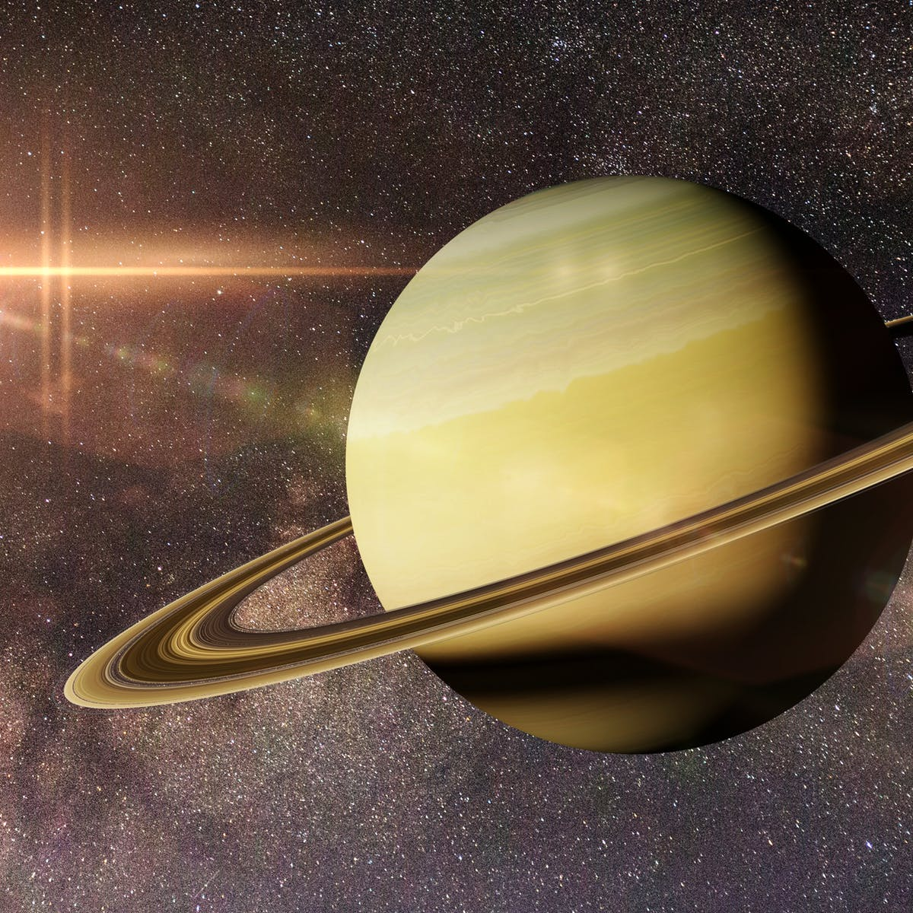

| Details & Info | Venus | Earth | Jupiter | Saturn |
|---|---|---|---|---|
| Mass (kg) | 4.87 x 1024 | 5.98 x 1024 | 1.90 x 1027 | 5.69 x 1026 |
| Diameter (km) | 12104 | 12756 | 142,800 | 12060 |
| Mean density (kg/m3) | 5250 | 5520 | 1314 | 690 |
| Escape velocity (m/s) | 10400 | 11200 | 59500 | 35600 |
| Average distance from Sun | 0.723 AU (108,208,930 km) | 1 AU (149,597,890 km) | 5.203 AU (778,412,020 km) | 9.537 AU (1,426,725,400 km) |
| Rotation period (length of day in Earth days) | 243.02 (retrograde) | 1 (23.93 hours) | 0.41 (9.8 Earth hours) | 0.44 (10.2 Earth hours) |
| Revolution period (length of year in Earth days) | 224.7 | 365.26 | 11.86 | 29.46 |
| Image of planet | |
|
|
 |